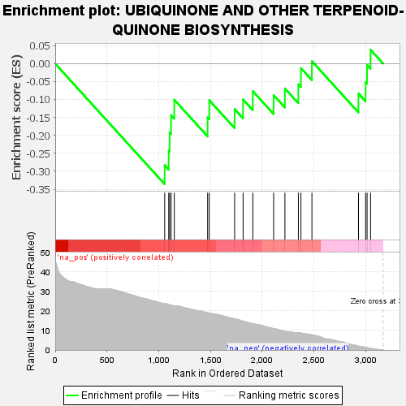
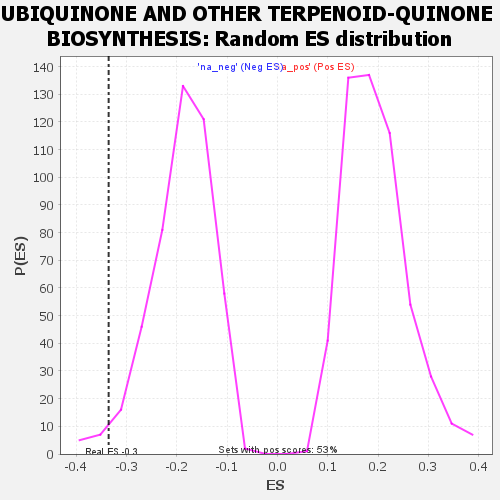

| | | Dataset | GSEA RNK clr Maaslin2 MucosalvsLuminal KO - SI.rnk |
| Phenotype | NoPhenotypeAvailable |
| Upregulated in class | na_neg |
| GeneSet | UBIQUINONE AND OTHER TERPENOID-QUINONE BIOSYNTHESIS |
| Enrichment Score (ES) | -0.33576643 |
| Normalized Enrichment Score (NES) | -1.7512053 |
| Nominal p-value | 0.023454158 |
| FDR q-value | 0.099803336 |
| FWER p-Value | 0.671 |
Table: GSEA Results Summary

Fig 1: Enrichment plot: UBIQUINONE AND OTHER TERPENOID-QUINONE BIOSYNTHESIS
Profile of the Running ES Score & Positions of GeneSet Members on the Rank Ordered List

Fig 2: UBIQUINONE AND OTHER TERPENOID-QUINONE BIOSYNTHESIS: Random ES distribution
Gene set null distribution of ES for UBIQUINONE AND OTHER TERPENOID-QUINONE BIOSYNTHESIS